Creative Programming: Hello World!
Lecture 1 (27 Jan)
The plan for today
Why Creative Programming?
Creative Programming
- Programming is a communication tool in modern society
- Creativity allows us explore this and express ourselves through limitations
Creative Programming
Creative coders are artists, designers, architects, musicians, and poets who use computer programming as their chosen media. These practitioners blur the distinction between art and design and science and engineering […].
~Golan Levin and Tega Brain
Insidious Rising
Breathing Earth
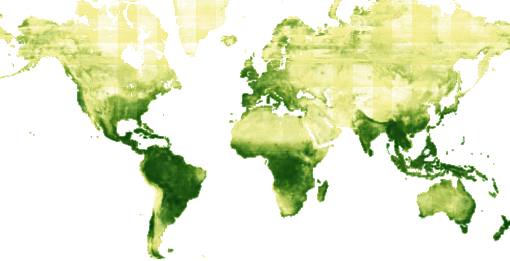Medusae
Paper Toilet
Temperature
Course Plan
Who are we?
Teachers:
- Ties Robroek (Lectures)
- Thomas Sandahl Christensen (Project)
Teaching Assistants:
- Axel Døring
- Kirstine Lund Hansen
- Line Larsen
 Ties Robroek
Ties Robroek
- Hit the local news building a pancake robot
- Spent too much money in board games
- Hobbyd on Pokémon fangames for a couple of years
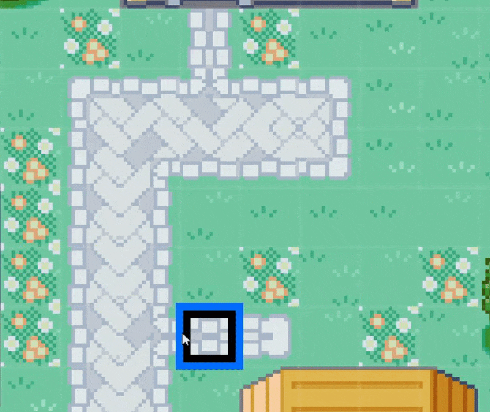
Thomas Sandahl Christensen
- Bachelor in what is now DDIT. Master in design from Goldsmiths
- Works as designer and fabricator in my own practice
- Founding member of the interactive art collective Circuit Circus
Fun facts:
- No warm weather; enjoys long distance hiking and cross country skiing.
- I have a NFC chip embedded in my hand - so I’m technically a cyborg.
Axel Lolle Døring
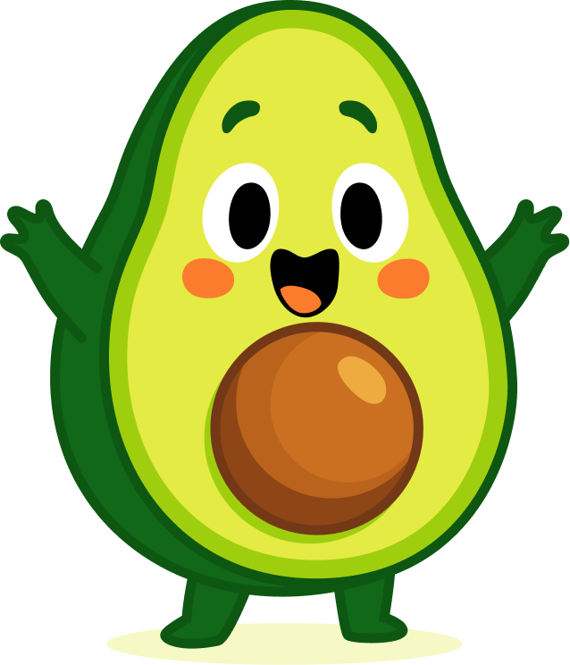 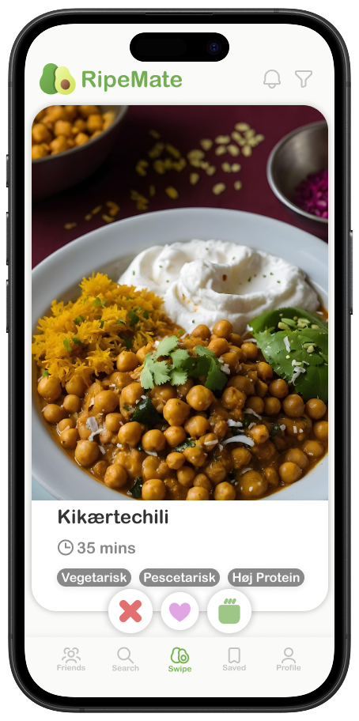
Why I love programming
- Finding novel solutions to problems
Fun facts
- I wear a dress shirt every day
- I have a christmas movie spreadsheet
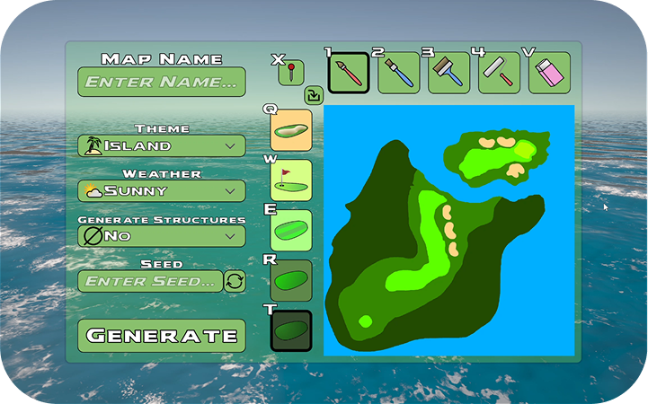 
Kirstine Lund Hansen
- Studied BDDIT and beginning my KDDIT thesis
- Coding can be thought of as the moldable material we are working with as interaction designers
- I’m looking forwards to sharing my experiences and seeing your projects unfold!
Line Larsen
- 2nd year BDDIT
- DDIT is my third started bachelor’s degree (SWU and psychology)
- I am OBSESSED with Baldur’s Gate 3

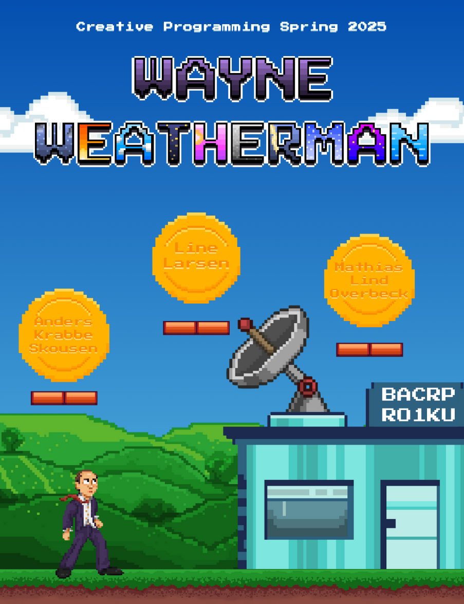
When, What, Where, and Who
Generally (but check the course plan!)
| When | What | Where | Who |
|---|---|---|---|
| Tuesday 8:00-12:00 | Lectures | 5A14-16 | Ties |
| Thursday 12:00-16:00 | Exercises | 5A14-16 | TAs |
Lectures
- Lectures are long 4-hour sessions; we will try to keep it interactive
- Lectures include both background and live coding
- It will be very hands on during the lectures. You need a working coding environment so you can follow
- The exercises are introduced but not elaborated upon in the lectures
Exercise Sessions
- Exercise Sessions are mandatory, TA-led sessions
- Important for getting started with bi-weekly assignments, getting help, and working with your groups
- There are four exercises to introduce you to programming, after which we start spending more time on the project
Course Plan
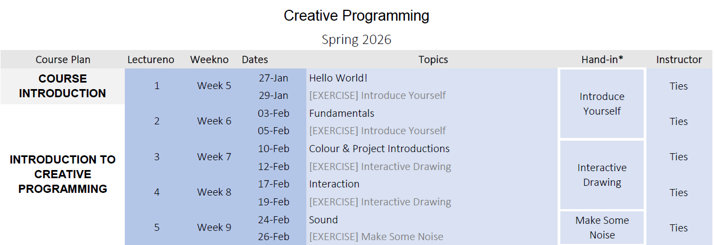The Project
- This course is built around a group project with 3-4 people.
- Throughout the semester there are several milestones
- As the semester goes on you spend less time on exercises and more on the project
Project Timeline
| When | What |
|---|---|
| Tuesday Week 7 | Group and Project introductions |
| Tuesday Week 10 | Milestone 1: Present Project Concept |
| Thursday Week 15 | Milestone 2: Present Project Progress |
| Tuesday Week 19 | Milestone 3: Final Presentation |
| Friday Week 22 | Report Hand-in |
Project Deliverables
- Description of the creative programming process
- Technical details of your interactive data representation
- Audiovisual documentation of the final project
- Presentation at a closing event
Please note: during the design process, the only evaluations that you will do are by you yourself as designers in your creative programming experiments!
Examination
| Exam type | C1G: Submission of written work, internal (7-trinsskala) How well you have attained the ILO’s of the course |
| Report | 12 pages group report Documenting the group project Including 1-page individual reflection per member Including individual reflection on the process |
| Hand-in | Fri, May 29, 2026 (14:00) |
Course Goal
Programming Fundamentals
After the course, the student should be able to:
Apply programming fundamentals in a creative programming environment.
Programming Creatively
After the course, the student should be able to:
Program creative and interactive artifacts using P5.JS (in JavaScript)
Understanding Code & Applications
After the course, the student should be able to:
Analyze and describe creative programming projects.
A Critical Approach
After the course, the student should be able to:
Use programming as a tool to communicate your perspectives on a pressing issue in a broader society.
Individual Reflection
After the course, the student should be able to:
Reflect on the principles and issues underlying a creative programming process.
Why should we care?
- Develop your programming skills – work more with code.
- Develop your creative programming skills – explore and experiment through code.
- Approach data & code as design materials.
- Nurture your ability to develop a creative practice.
- Articulate your creative design process and reflect
Classroom Culture
- Be creative with programming and data.
- Use programming as something to explore, not just a final tool.
- Focus on the process, not skill levels.
- Support each other and learn together.
- Try to solve problems together!
Artificial Intelligence
- There are a lot of AI tools out there, also for programming
- The issue is that when you use AI, you do not fail, which hinders learning
- Do not fear to make mistakes!
- If you need to use AI, limit it to using it as a search engine
Programming Experience
- Programming is a skill that requires a lot of “miles” and practice.
- Have you programmed before?
- Join the menti: XXXX XXXX
Course Structure
LearnIT
- Main channel for communication
- Course program and planning
- Every lecture/exercise has its own section
- Direct links to slides other resources
GitHub
- GitHub is a place where people can put their code projects
- For this course: Lecture slides and resources are hosted there (but LearnIT has links)
- https://github.com/Sipondo/creative-programming-2026
Slides
This course uses quarto slides instead of PowerPoint.
Creative Programming is all about interactivity, and the slides reflect this. Lectures are hands-on!
You can open the slides on any device; they are websites.
(Re)visiting slides?
While there is no audio/video recording, these slide are narrated with text.
Did you miss a slide or want to revisit? Open the narration tab while studying to get an explanation of difficult slides.
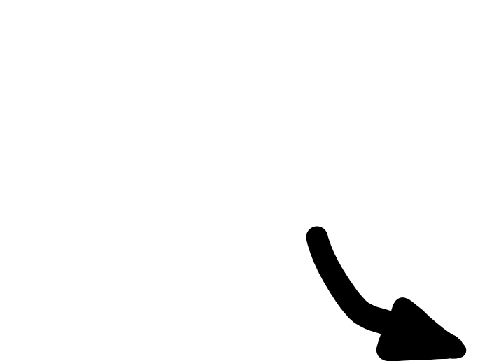
Coding Examples (Static)
Throughout this course we will have many slides with coding examples.
Sometimes the code is shown without displaying what it does:
Coding Examples (Interactive)
Other times we have interactive coding blocks, just like the editor on your computer.
Let’s get started!
Exercise 1: Hello World!
Hello World: a simple computer program that emits (or displays) to the screen a message similar to “Hello, World!”.
These two weeks we are going to make a creative version of a “Hello World!” program.
First time we are expressing ourselves in programming - make a program that displays your name / favourite colour / hobbies / mood.
Introduce Yourself!
Let’s start with a session on who you are. This info will be really useful for the first exercise!
Brainstorm together - who are you and how do you want to say “Hello World!”?
Join the tldraw: XXX
p5.js
- We learn programming in this course in p5.js.
- p5.js is a framework written in Javascript, one of the most widely used programming languages in the world.
- Nearly every website on the internet uses Javascript!
Downloading and Installing
- Similar to editing text documents in Word, we need a program to edit our code in.
- For this course, we will write our code in Processing.
- How many have already downloaded processing?
Step 1: Download Processing
Go to https://processing.org/download

Step 2: Install Processing
Install Processing.
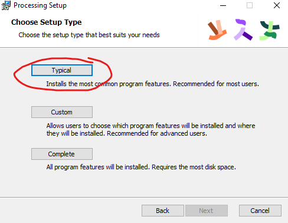
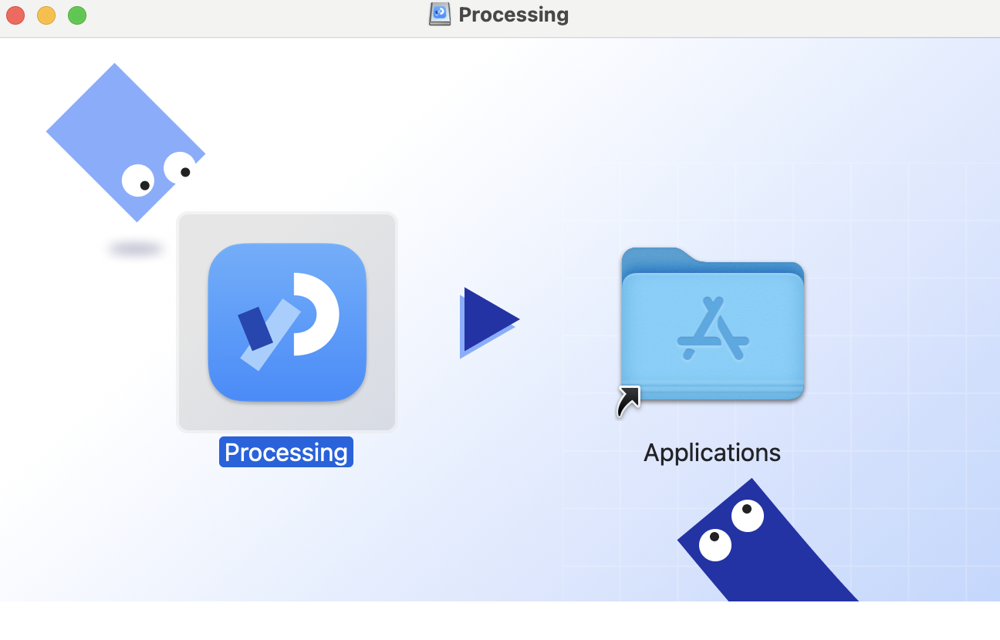
Step 3: Manage Modes
Open Processing, click away the welcome message, and select “Manage Modes” in the top right.
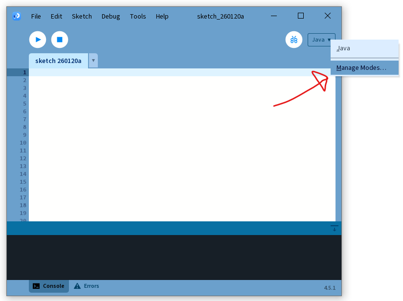Step 4: Install Mode
Select and install the p5.js mode.
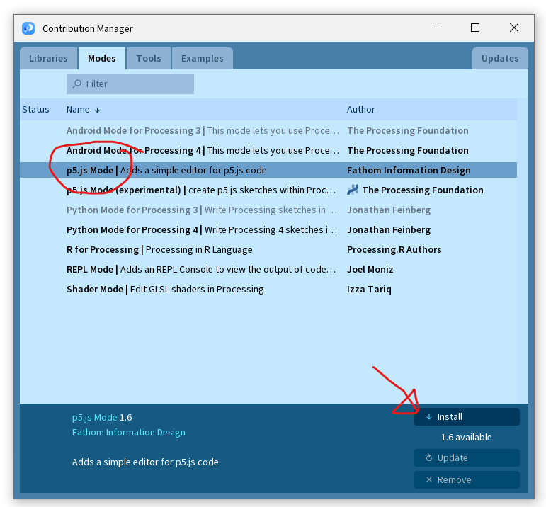Step 5: Select Mode
Back in the editor, select the p5.js mode.
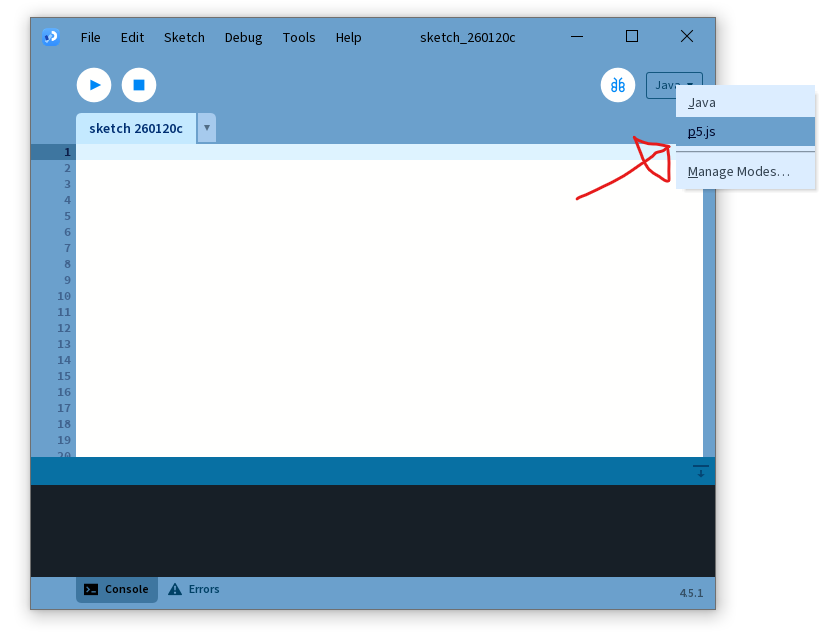Creative Programming: Let’s get coding!
Make sure you have your Processing editor running and ready.
Sketch and index.html
Our p5.js sketch has a sketch (javascript) file and an index.html file.
We will just focus on the sketch file (for now).
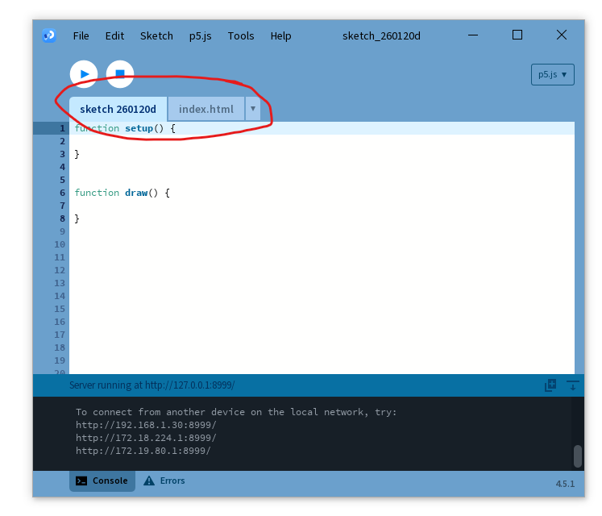Saving a sketch will result in a folder with both these files.
Let’s open an example
There are a bunch of examples available inside of the editor.
Double click an example to open it up.
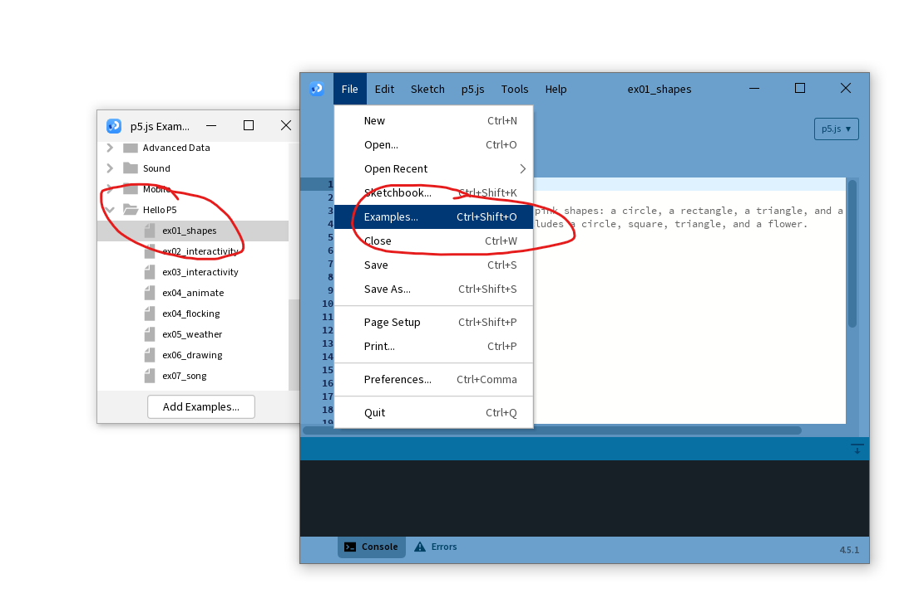Running your code
Running the code (▶) opens up your web browser.
Javascript is a website language.
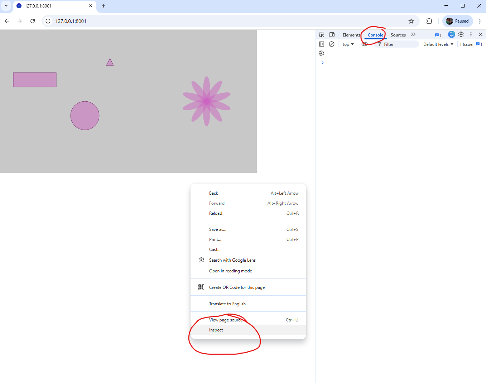Right mouse button -> Inspect to see any errors or other console output.
What runs your code
Every Sketch starts with two functions: setup and draw.
setup() runs once at the start of the sketch.
What runs your code
Every Sketch starts with two functions: setup and draw.
draw() runs forever, repeating continuously.
A single message
console.log() allows us to write a message to the debugging console.
This is very useful for when you are trying to get rid of issues (bugs) in your code.
Let’s break this down
console.log() is the function that writes a message. The message it writes is the argument that is within ( ... ).
"Hello! This executes once." is a string, a sequence of characters. Strings are surrounded by " to signify their start and end.
Message waterfall
Let us now move our console.log() to the draw() function instead.
Javascript syntax
- Lines end with a semicolon (
;) to indicate the end of the instruction. - Comments (
//) are invaluable to explain the inner workings of the code to the reader. - Multiple lines can be commented as well, via (
/* */)
Making mistakes
Making mistakes is human. What happens if we forget the second " in our code?
The code does not know where the string ends, resulting in a syntax error.
The canvas
- Things are positioned on the canvas using coordinates, top-left is
(0, 0) xis the horizontal position andyis the vertical position
Defining the canvas
- In our
setup()(only once), we define the size of the canvas createCanvas()requires two arguments:x(horizontal) andy(vertical) specify the size of the canvas
Making a mark
- We can draw a point with the
point()function with two arguments - The point will be tiny; use
strokeWeight()to define the thickness
Drawing a rectangle
- Drawing rectangles with
rect()requires 4 arguments - You need to specify the top left
xandyas well as the widthwand heighth
Drawing round shapes
circle()draws a circle with 3 arguments:x,yandsizeellipsedraws an ellipse with 4 arguments:x,y,w,h
A brief note about colour
- We have used
background()andfill()so far to add colour - These take three arguments to define the colour we want to draw
- The order is
red, green, blue; a higher value indicates a stronger intensity of that color - We will more thoroughly discuss colour in a future lecture
Moving our text to the canvas
text()puts our text on the canvas, with the args being the textstring, and positionxandy- We use
textSize()before drawing to set the size of the text
What about interactivity?
- So far we have discussed ways of drawing static shapes
- In preparation for the first exercise we will briefly discuss two ways of creating dynamic drawings
- We will use
random()to generate random numbers mouseXandmouseYallows us to use the position of the mouse
Random
random()generates a random number that we can use e.g. as an argument for drawing- Two arguments: the first is the lowest number and the second the highest number it can generate
Mouse
mouseXreturns the horizontalxposition of the mouse andmouseYthe verticalyposition- As with
random(), we can also use these numbers in math
Resources
- p5.js reference documentation: https://p5js.org/reference/
- Coding Train: https://www.youtube.com/@TheCodingTrain/playlists
- Inspiration: http://www.generative-gestaltung.de/2/
Practice and do not be afraid to make mistakes :)

Creative Programming 2026 Lecture 1 - Ties Robroek - IT University of Copenhagen
Comments
Remember to comment your code to make it legible to someone else (and your future self!).